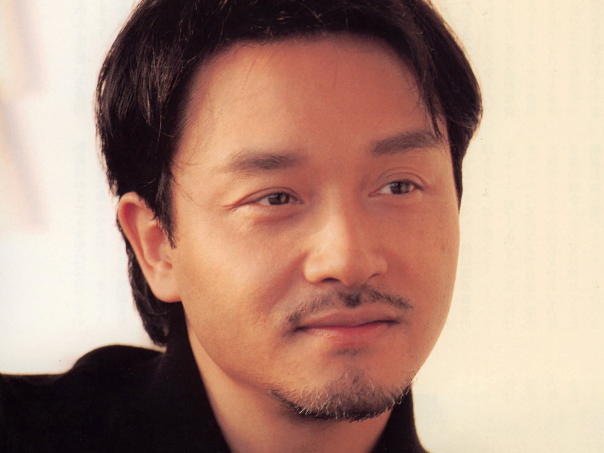
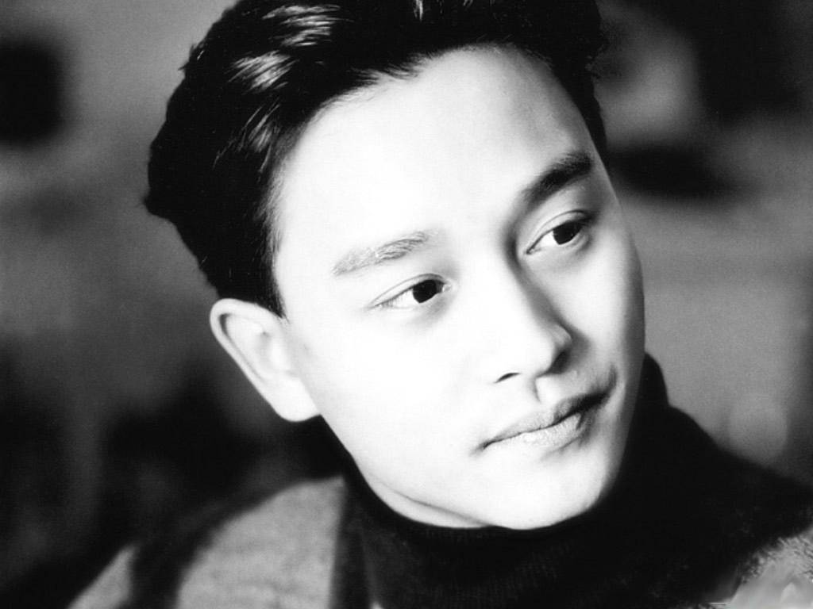

张国荣
张国荣（Leslie Cheung，1956年9月12日－2003年4月1日）生于香港，著名歌手、影星、词曲创作音乐人，演艺圈多栖发展最成功的代表之一，于大中华地区拥有广泛影响力，曾担任唱片监制、演唱会艺术总监、配乐、剪辑师、电影编剧、电影导演和电影监制。1980年代于韩国取得高知名度[1]，为第一位享誉韩国乐坛的华人歌手：1987年，专辑《爱慕》在韩国空前大卖20万张，1995年，专辑《宠爱》香港本地销量33万张（六白金），韩国销量超过50万张，至今仍保持华语唱片在韩国的销量纪录。
经历
籍贯广东，生于香港九龙，父亲是出名的洋服裁缝张活海，与母亲潘玉瑶育有十名子女，其排行第十，为家中老么，姐姐是香港知名社会菁英张绿萍。
成就和荣誉
- 1984年至1989年与谭咏麟并称香港两大男歌手[2]，成为香港1980年代乐坛巨星。
- 1991年凭《阿飞正传》成为第十届香港电影金像奖影帝。
- 1999年，获得香港乐坛最高成就奖：
- 2010年，美国CNN举办“过去五十年，闻名全球的五大指标音乐人”票选，其名列第三
出道作品
- 出道作品 《I Like Dreamin'》
- 活跃年代 1977年至2003年
- 唱片公司 宝丽金唱片（1977－1981）
- 华星唱片（1983－1986）
- 新艺宝唱片（1986－1990）
- 滚石唱片（1995－1999）
- 环球唱片（1999－2003）
生活照
 海外评价
美国有线电视Biography Channel ：张国荣是亚洲最受欢迎的艺人之一，他在舞台上和屏幕上的辉煌成就令他成为一位超级明星，无论在电影界还是音乐界他都是声名显赫。 美国CNN：他是亚洲顶级巨星，拥有激动人心的舞台表现力，惊人的美貌以及令人激赏的演绎才华。